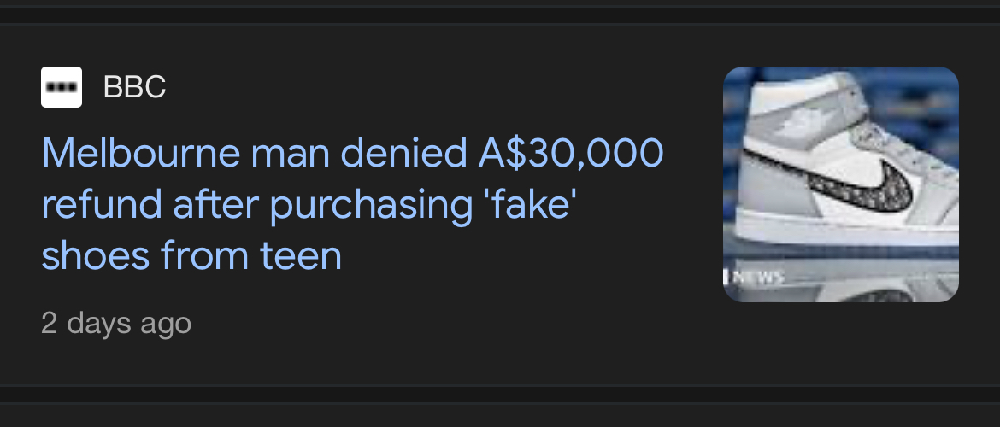
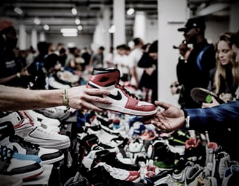
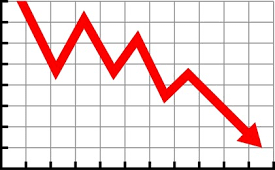
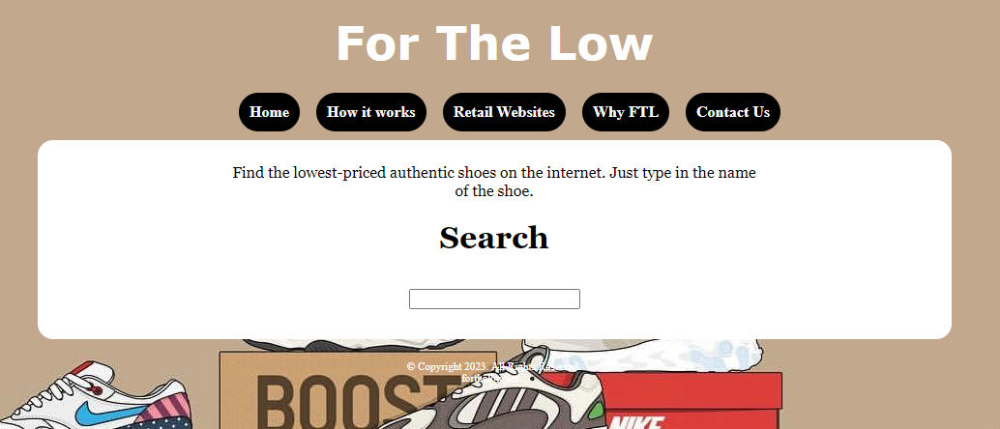

Why For The Low?
The Problem:
Resell Websites
The resell industry has made it difficult for the average consumer to purchase sneakers at an affordable price. Resell websites like StockX and Goat often sell sneakers at a much higher price than the retail cost so that sellers can make a profit.
Scammers
If one chooses to buy sneakers from a reseller, they run the risk of being exploited for more money or being sold fake shoes.
Fakes
 Although improving quality of fakes have made them become more prevalent in recent years, buying these counterfeit shoes is illegal. It also hurts the businesses that create the amazing shoes that people want to buy.
The Solution:
For The Low
Instead of resell websites, for the low only analyzes retail websites that work with company's that produce your favorite sneakers. This eliminates the risk of unknowingly being sold fakes and exploitation. Moreover, For The Low will find the cheapest item sold